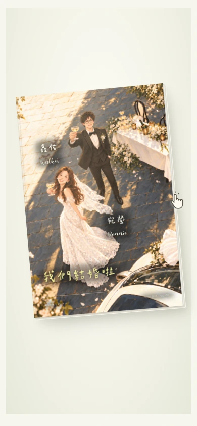
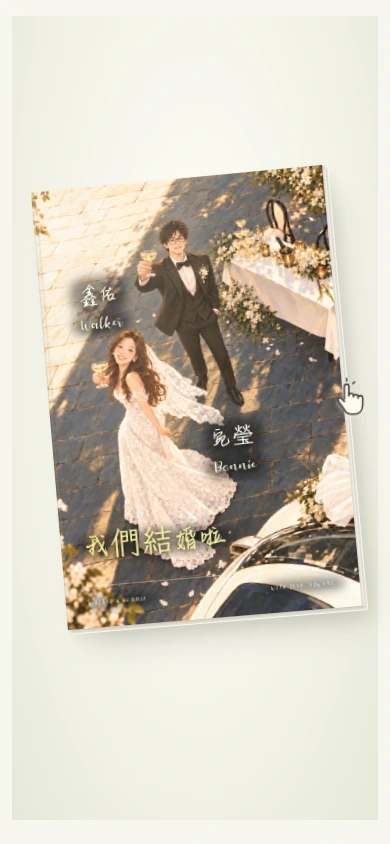

辰宇落雁體 × Autery
細緻、舒展的中文手寫，搭配浪漫英文。
中文使用辰宇落雁體 2.0；英文統一 Autery。
點圖查看原尺寸
英文都用 Autery，中文選你喜歡的手寫風格。
點照片可看原尺寸；預覽採目前放大 2px 的字級；正式網站不變。
細緻、舒展的中文手寫，搭配浪漫英文。
中文使用辰宇落雁體 2.0；英文統一 Autery。
圓潤、俏皮的中文筆觸，多一點可愛感。
中文使用 StarPandaKids 2.1；英文統一 Autery。

中文與數字使用你提供的平方韶華體。
缺少「瑩、禮、綺、麗、劇、場」等繁體字，以霞鶩文楷補字。
